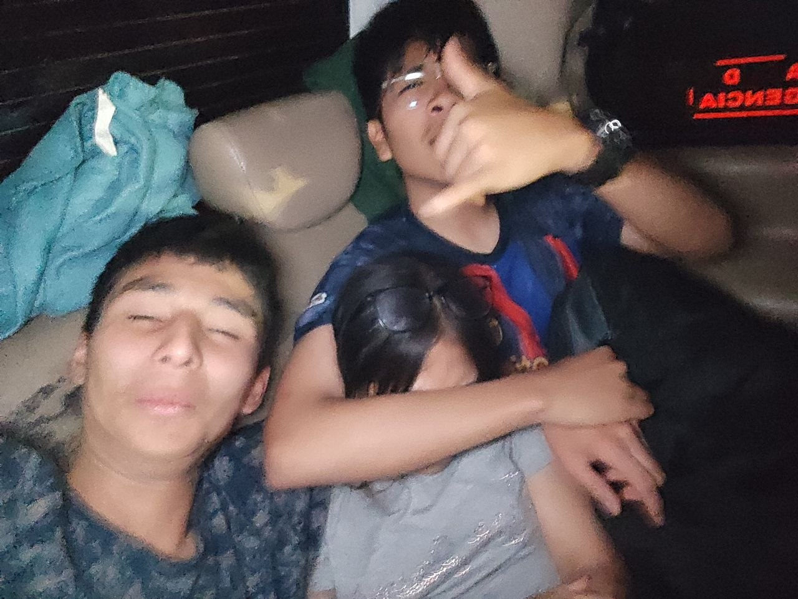

Rata que este leyendo solo quiero hacerte recordar que nunca los voy olvidar por ser parte de mi vida en la secundaria y hacer muchos recuerdos desde el abandono de Mari en el Jockey hasta las caras semifotogenicas de Luis
O cuando le haciamos bullyinga Mari
Recuerden que siempre voy a disfrutar pasar el rato con ustedes

pero bueno ratas ando practicando para mi PC